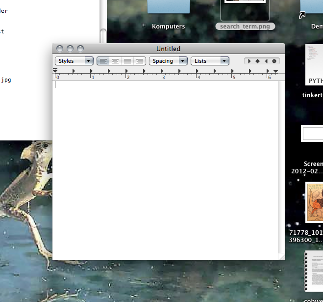
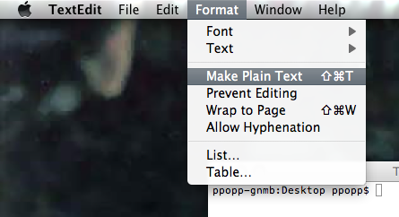

Lesson 2
Press <Cmd-Space>. This brings up your search bar.

Type in the word "terminal" to have it search for the Terminal Application.

Hit <return> to start Terminal.
Refresher
We learned several terminal commands last week. To run them you just have to type them into the terminal and hit <return>
ls -- list directory contents
cd -- change directory
mkdir -- make directory
top -- display information about the processor, RAM and other computer programs running
Last week we created a folder with your name on it. Use "cd" to change directories until you get there (hint: these were placed on the desktop so you'll have to start with "cd Desktop")
FYI, in these instructions if you're supposed to type something into Terminal, it'll generally be shown as
$ cd Desktop
You don't need to type in the "$ ", but just know that it means to type things into terminal. And don't forget to hit <return> when you're done!
Press <Cmd-Space> again to bring up your Mac spotlight search, and this time type in textedit.
Hit return to start the TextEdit application.

Just to get things rolling, in TextEdit type
print "starting lesson 2!"
Before saving, remember that TextEdit initially tries to save files in rtf (rtf stands for Rich Text Format). We don't want any of that funky jazz because it confuses python, so before saving convert your file to txt format. Go to "Format" in the menu bar and click "Make Plain Text"

Now hit <Cmd-s> to save the file. Save it in your folder with the name "lesson_2.txt".
Go to terminal and run
$ python lesson_2.txt
Now go get Phil and show him what came out. If you're having trouble, also get Phil and tell him to help you out.
Variables
Variables are a very important part to any program or programming language. They're place holders for information. In python, variables have types. Today we'll play with strings and numbers.
Numbers
Erase what you had in TextEdit and type this instead
x = 5
y = 10
z = x + y
print z
When you run your program, what do you think we'll happen? Save your file by hitting <Cmd-S> and then go to your terminal and run
$ python lesson_2.txt
No answer this question, what is (123534325 + 289385) * 135364 / 23483?
You can do this math by hand or you can use your python script (NO CALCULATORS/CELL-PHONES or WHATEVER! NOT EVEN THE CALCULATOR ON THE COMPUTER). When you have the answer, get Phil and tell him the answer. If you're having trouble, get Phil anyway!
Strings
In computer-jargon, strings just mean words. Now we'll run our old program again, but this time with strings. Type this into TextEdit
x = "you are a"
y = "wiz at python"
z = x + y
print z
When you run your program, what do you think we'll happen? Save your file by hitting <Cmd-S> and then go to your terminal and run
$ python lesson_2.txt
What happens if you change it to (notice I changed "+" with "-")?
x = "you are a"
y = "wiz at python"
z = x - y
print z
Try it out, and get Phil and tell him why you think things turned out that way.
Congratulations!
Now lets move onto Flow Control
Flow Control
There are several different types of flow control, today we'll be working with "if" statements and for loops.
If
If statements check whether something is true. If it is true then it runs some code, otherwise it won't.
Get rid of your old stuff in TextEdit and try typing this into TextEdit:
y = ?
x = 10
z = x + y
if x == 23:
print "Nice one!"
else:
print "try again"
As you can see there's a "?" in the text. You need to figure out what value that "?" should be so that you're program prints out "Nice one!".
Once you get it tell Phil! Or ask him questions!
For
For loops repeat a bunch of code once for each value. As an example try this piece of code out
for i in range(0, 100):
print "wow! we're on number " + str(i)
Sweet, well done! Ok, here's a last challenge: add up the numbers 1 through a 1000. I mean like this
1 + 2 + 3 + 4 + 5 + 6 + 7 + 8 + 9 ...
What's the answer? Tell PHIL!
Hint: try a "for loop"
Hint: Did you know you can do things like this in python
x = 1
x = x + 1
x = x + 1
print x
(this program prints the number "4")